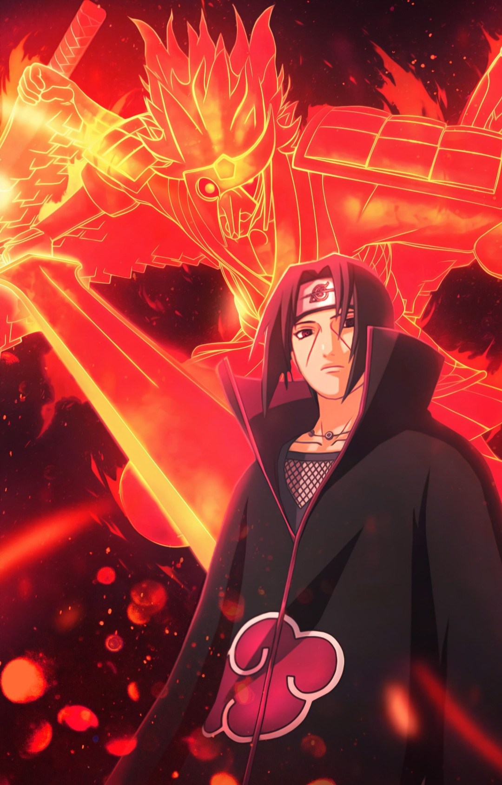

ITACHI UCHIHA
Itachi Uchiha, the older brother of Sasuke Uchiha. He was a child prodigy who excelled in shinobi training and became an Anbu captain at thirteen. However, he was also burdened by the horrors of war. After witnessing the Third Shinobi World War, Itachi sought peace and was tasked with eliminating his own clan. He slaughtered his entire clan, sparing his younger brother, Sasuke, to protect Konohagakure and Sasuke's survival.